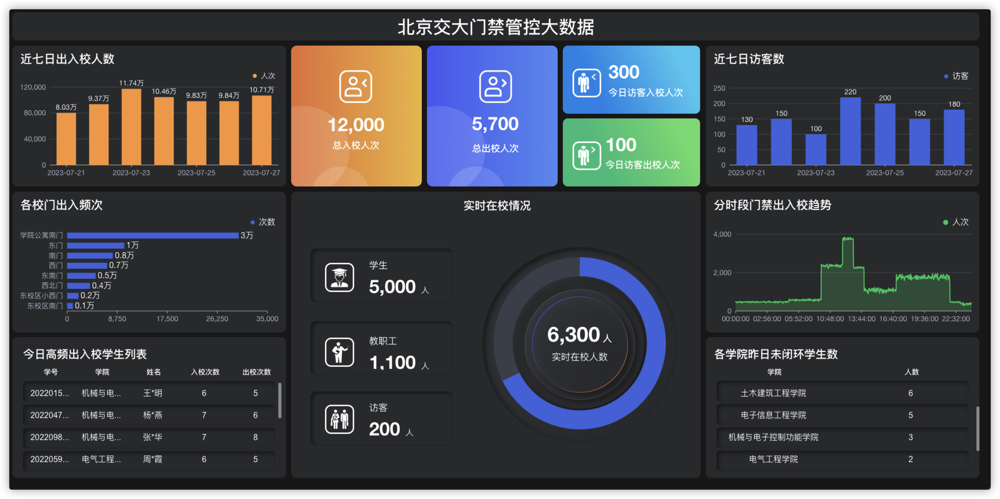
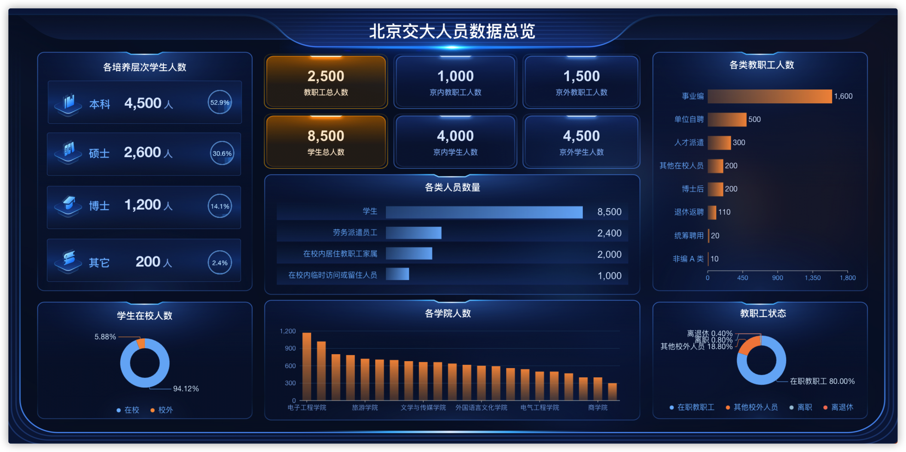
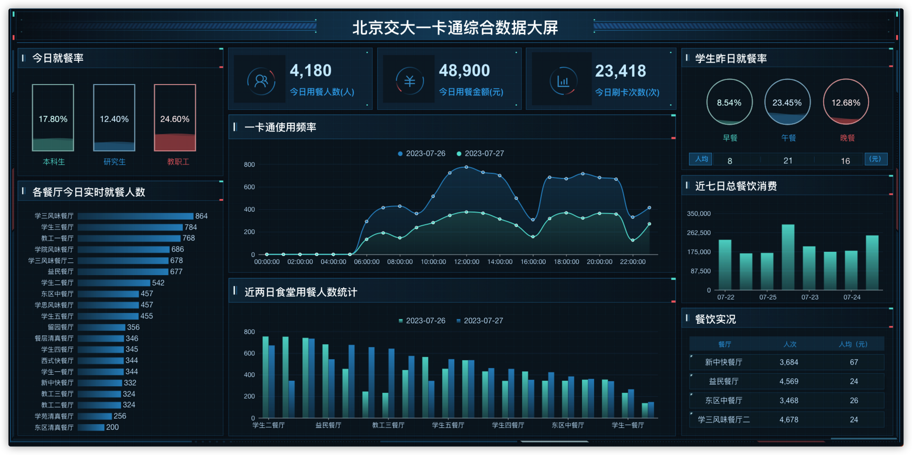

DataEase 客户案例
案例研究与最佳实践
案例研究｜北京交通大学基于DataEase开展多场景校园数据分析与展示
DataEase助力北京交通大学数据的精细化运营，以数据驱动决策。
北京交通大学是教育部直属，教育部、交通运输部、北京市人民政府和中国国家铁路集团有限公司共建的全国重点大学，是国家“211工程”“985工程优势学科创新平台”“双一流”建设高校。
多年来，北京交通大学积极发挥信息技术赋能学校人才培养、科研创新、协同治理的作用，持续加强学校信息化和网络安全顶层设计，制定了学校信息化建设总体方案，大力开展信息化建设与数据治理工作，并取得了初步成效。

一、北京交通大学的数据管理需求
高校在日常运营中需要收集并处理大量的数据，这些数据的种类范围涵盖了人才培养、科学研究、管理服务等不同的业务域。这些数据的管理、分析和可视化都对高校的决策与发展具有重要的意义。
通过数据可视化这一将数据转化为图表等视觉展现形式的方法，高校可以更加便捷地管理和展示数据，更直观地了解其运营管理所需数据的趋势、分布和关系，并且加速推进数据分析与决策。
北京交通大学将数据视为重要的资源和珍贵的信息资产，在开展的数据可视化工作方面也有着一些具体的要求。
首先，高校需要确保所选用的数据可视化系统足够安全。鉴于数据的重要性，高校往往要采取数据备份、权限控制等一系列措施来保护其数据的安全性；
其次，高校需要确保所选用的数据可视化系统易于使用和维护。这意味着高校所应用的数据可视化系统需要具有友好的界面设计、完善的技术支持和周全的维护体系，能够为用户营造良好的使用体验。
此外，承载数据可视化职能的工具软件还需要解决高校在日常使用场景和跨部门协作等方面的实际问题，具体包括：
■ 多场景数据来源与数据库系统异构性：北京交通大学拥有学校人员与组织机构管理系统、一卡通系统、门禁综合管理平台、高性能计算服务支撑平台、微信消息中台等多种场景来源的数据，这些数据分别产生于不同业务系统多源异构的数据库，这样便带来了数据整合与统一分析的复杂度；
■ 数据量呈线性快速增长：高校中的大部分场景产生的数据主要来源于学生的日常高频行为，例如一卡通消费数据、门禁数据等，数据量会随着时间推移呈现出线性增长，大量数据的快速累积增加了数据分析的难度；
■ 传统数据分析与手工制作图表的局限性：传统的数据分析方式效率较低，无法满足高校运营决策对数据实时性和准确性的要求。手工制作的图表可能存在视图种类不全、设计形式受限、组件工具匮乏等问题，数据的多维分析因此会受到一定局限。另一方面，图表的手工制作过程复杂耗时，难以帮助高校快速从数据中获取深入的洞察。自主开发数据分析工具则需要投入更多的人力成本，同时实现成果所需的时间也会较更长，性价比相对较低；
■ 数据安全和隐私保护：高校数据包含学生和教职工的个人数据等敏感信息。对于高校来说，保护数据的安全性和隐私是第一要务；
■ 部门数据分析的分歧：高校中不同部门可能使用不同的数据分析方法和工具，这样会导致各部门数据分析的操作和理解存在差异性，难以实现全局统一的数据分析。
二、DataEase高校应用的优势
基于严谨的评估和测试，北京交通大学选择了基于DataEase开源数据可视化分析平台搭建的数据可视化解决方案。该解决方案所具备的优势包括：
■ 跨场景数据整合
DataEase具备强大的数据整合能力，可以将来自不同场景、不同数据库系统的数据进行统一整合。这有助于消除数据孤岛，使得高校的各类数据能够互通有无，从而形成更全面和准确的数据分析视角；
■ 高效的数据可视化
DataEase提供了丰富的数据可视化功能，支持多种图表类型，让用户能够以直观的图表、图像和报表等形式呈现数据。高校各部门可以通过DataEase更轻松地将数据转化为简单易懂的视图信息，从而更好地支持决策的制定和规划；
■ 自助式的分析与洞察
DataEase清晰简洁的操作界面使得各部门的工作人员能够基于DataEase进行自助式的视图制作、数据分析和信息洞察。使用DataEase无需掌握复杂的编程技能，用户可以根据需要，通过鼠标拖拉拽的方式在DataEase中创建各种图表，从而更加快速地发现数据的模式、趋势和关联；
■ 实时数据更新与监控
DataEase支持实时数据连接和更新，这意味着在DataEase中用户可以随时获取最新的数据。在通过DataEase制作的仪表板大屏中，所展示的各项数据指标可以在被实时监控的同时保持及时更新，帮助高校更敏捷地做出反应和调整；
■ 多维度交互式分析
DataEase提供了多维度交互式分析功能，允许用户根据不同维度进行数据切片、过滤和钻取。这有助于用户深入了解数据的背后规律，发现潜在的信息提示，获得改进机会；
■ 降低开发成本
相对于传统开发定制化的数据分析工具，引入DataEase能够显著降低开发成本。无需大量的编码和开发时间，高校就可以通过DataEase快速搭建起可视化分析平台，提高数据管理和分析效率；
■ 统一的数据分析流程
通过在高校内部推广DataEase的使用，可以建立起统一的数据分析流程和标准。这有助于实现不同部门之间的数据分析一致性，促进跨部门的协同工作，实现更好的数据驱动决策。
三、DataEase的多场景数据可视化实现
北京交通大学将DataEase应用到多种校园场景开展数据可视化分析，包括校园门禁数据管理、学校人员与组织信息管理、校园一卡通消费统计、校内微信消息推送平台数据统计、高性能计算平台资源分配分析等。
1. 校园门禁管理可视化

▲ 图1 北京交通大学门禁数据管理看板 （注：图中均为模拟数据，不代表真实信息）优势与特色：
■ 实时监控与安全管理：通过DataEase，学校管理层可以实时监控校园门禁系统数据，随时掌握校内人员与校外人员出入校园的状态，记录出入状态异常的人员，实现在校师生的安全管理，并及时发现潜在问题；
■ 准确的数据分析：用户可以通过DataEase制作出图表与数据结合展现的仪表板大屏，帮助学校管理者更加清晰、准确地分析门禁数据，制定更具针对性的管理策略；
■ 数据共享与透明度：通过DataEase的可视化展示，学校可以将门禁数据以仪表板大屏的方式呈现给各个层级的管理者和相关部门工作人员，提高数据的共享和透明度；
■ 简化操作与普及：DataEase简单、友好的使用体验让非技术人员也能轻松操作使用，各部门可以直接利用DataEase进行仪表板制作和数据分析，减少了职工培训成本，降低了数据可视化的技术门槛。
通过DataEase实现校园门禁系统数据的可视化展示，为学校提供了更高效、智能的门禁系统数据管理和决策支持，为校园人员出入管理带来了显著的便捷和改善。
2. 学校人员数据仪表板

▲ 图2 北京交通大学人员数据看板 （注：图中均为模拟数据，不代表真实信息）优势与特色：
■ 即时了解人员情况：通过DataEase，学校管理层可以实时了解学生、教职工等人员的数量、分布和趋势，提高管理的敏感度；
■ 精准分配资源：通过DataEase进行数据可视化分析有助于学校更精准地分配人力、物力等资源，优化学校的运营效率；
■ 透明度与合作：通过分享与展示DataEase制作的数据可视化仪表板大屏，各部门可以共享人员数据，增进部门协作，助力人员部署决策的制定；
■ 节省人力成本：相对于手工制作报告和图表，使用DataEase制作仪表板可以显著减少人力成本，提高数据分析的效率和准确性。
通过DataEase展示学校人员数据，为学校管理带来了智能化、高效化的数据支持，在人员资源管理方面带来了更多便捷和助力。
3. 校园一卡通消费分析

▲ 图3 北京交通大学一卡通数据消费看板 （注：图中均为模拟数据，不代表真实信息）优势与特色：
■ 消费趋势一目了然：DataEase能够将校园一卡通的消费数据以直观的图表呈现，帮助学校管理者快速了解校园消费趋势，包括消费行为、消费高峰、消费地点等；
■ 个体消费行为分析：通过DataEase进行校园一卡通消费数据可视化，高校可以深入分析个体的消费习惯，了解学生、教职工对餐厅的偏好、就餐时段等，进而为校园餐厅提供更加个性化的优化建议；
■ 资源优化与服务升级：通过DataEase展现并分析校园一卡通消费数据，高校可以更好地规划资源分配，优化服务，提升校园消费体验，满足师生需求。
通过DataEase展示学校一卡通消费情况，让校园消费统计更加简便，为学校餐厅管理提供了智能化、数据驱动的支持。
四、未来展望
高校数据驱动决策的成果不仅仅停留在数字和图表上，更体现在实际的成效和影响上。例如，通过校园一卡通消费数据分析，学校可以优化食堂运营，提升服务质量；通过校园门禁数据管理，学校可以增强安全管理，提高校园管理效率。
北京交通大学的数据驱动决策之路，不仅在于工具的引入，更在于数据文化的建立和推广。学校各级管理者需要从数据中获取洞察，逐步形成决策的“数据思维”，从而更加敏锐地把握学校的发展方向。
随着技术的不断发展，数据驱动决策将在高校管理中扮演越来越重要的角色。北京交通大学通过引入DataEase等数据可视化解决方案，为校园数据的精细化运营开辟了更为广阔的发展空间。通过DataEase等数据管理及可视化工具进一步完善数据的收集、存储和处理体系，北京交通大学加强了数据治理，有效提升数据的价值和利用效率。
同时，通过数据驱动决策，北京交通大学能够更加精准地应对各种挑战，为学校的创新、发展和变革提供有力支持，实现教育质量的提升和可持续的发展目标。
联系我们
想要进一步了解 DataEase ? 欢迎通过如下方式联系我们。